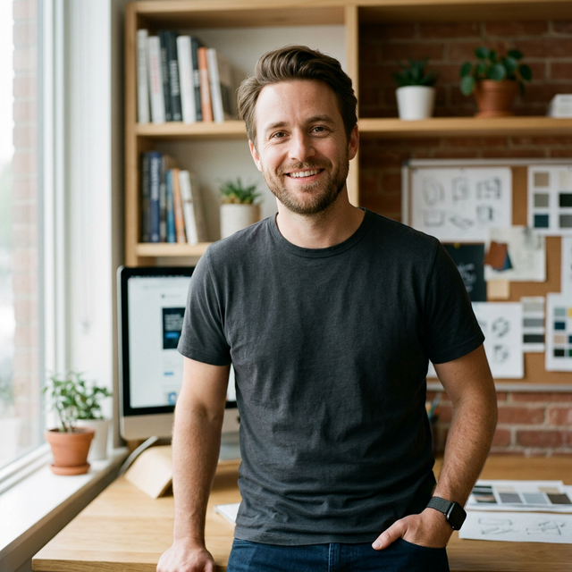
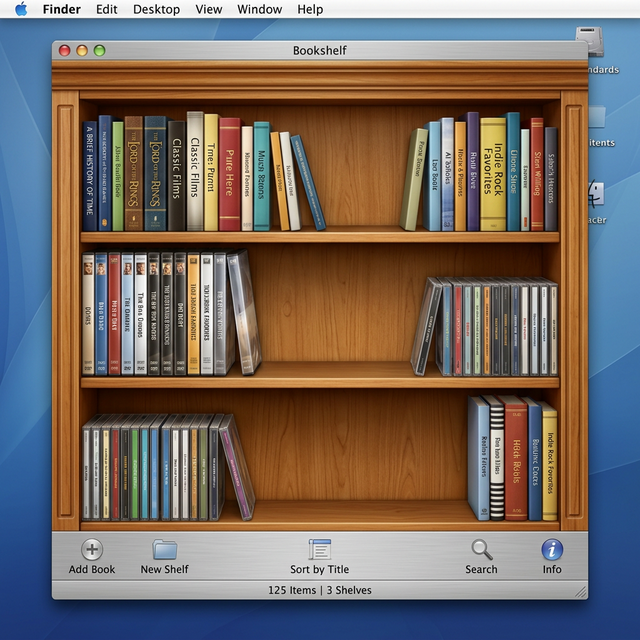
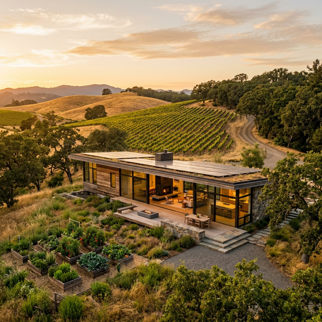

[ PROFILE_004 · CRAFTSMAN ]

Emotional Design · 情感化设计
1986.03.23 — Seattle, WA
从小热爱电影制作，没上过大学，却是世界级顶尖设计师，职业生涯深刻地烙印在过去二十年的重大科技产品之上。在移动互联网时期设计领域有一些个人英雄，其中 UI 是 Mike Matas，交互是 Bret Victor。
🔍 一份隐藏的自我介绍
在其个人网站 mikematas.com 简洁的作品图片背后，查看源代码可以发现一份完整的个人自述：
大家好，我是 Mike Matas。我在西雅图长大，从小就热爱制作电影。 2000 年，也就是我 13 岁的时候，我在当地一家电影制作工作室获得了 一份视频剪辑的实习工作。在那次实习期间，我学会了欣赏一台设计 精良的计算机所蕴含的力量。我开始爱上的不仅仅是你用计算机能做 些什么，而是爱上了计算机本身。 2001 年，我 14 岁那年，在 The Omni Group 做客户支持邮件。工作了 几天后，情况很明显了：我轻度的阅读障碍和糟糕的拼写能力根本做 不了客户支持。然而他们让我留下来，帮助设计用户界面。从此， 我就踏上了用户界面设计的职业道路。 17 岁那年辍学创办了自己的软件公司。Delicious Library 荣获了 2005 年 WWDC 最佳用户体验奖。19 岁的我没有去上大学，而是搬到 了旧金山，加入了当时只有六个人的苹果 HI 团队。 当人们问我在哪里上的大学时，我喜欢说是在"苹果公司"。 七年前，我和妻子搬到了旧金山以北两小时车程的地方，住在 希尔兹堡郊外干溪谷山麓的一座离网住宅里。我们非常享受这里 的生活，陪伴我们的还有两个年幼的女儿、十只鸡、一群蜜蜂， 以及一个生机勃勃的菜园。
从我记事起，我就一直有那种设计师的个性，我喜欢观察事物，并试图找出如何改进它们。
我过去常常到处勾勒出一些小想法，但我认为真正让我放松的是，当我把我的设计工具从铅笔升级到 Photoshop 时——Photoshop 为我做了两件事。首先，它允许我把我的想法转化为实际的设计，让其他人也能理解并为之兴奋。其次，当我学习这个工具时，展现出的新的可能性激励我想出了一些设计理念，如果我没有使用 Photoshop 的话，我可能永远想不到这些。
同样的事情发生在我学习如何使用 Cinema 4D 做 3D 建模时，最近我学习如何使用 Quartz Composer 做交互式设计时。

Delicious Library — Mac 平台拟物化设计早期的巅峰之作
2004 年桌面级数据管理软件通常是丑陋的表格、灰色按钮和密密麻麻的文本框。Delicious Library 用 iSight 摄像头扫描条形码，扫码成功时发出"哔"声，调用 TTS 大声读出书名，在界面上"砰"地弹出一本带有立体阴影的精美书籍。
它完美演示了 Mac OS X 的核心图形技术（Quartz 2D、Core Image、QuickTime），苹果最喜欢把奖颁给那些能将其系统新特性发挥到极致的开发者。荣获 WWDC 2005 最佳用户体验奖。
乔布斯直接向 19 岁的 Mike Matas 抛出橄榄枝，将他挖进只有 6 个人的绝密 HI 团队。
iPad 发布时自带的 iBooks 木质书架布局——几乎是对 Delicious Library 设计风格的像素级致敬。
Mike 当年辍学去做设计，之后也没回校园上大学。「当人们问我在哪里上的大学时，我喜欢说是在苹果公司。」
离开苹果后创办 Push Pop Press，为前副总统戈尔制作《Our Choice》应用书籍。2010 年 iPad 刚发布，当时的电子书只是屏幕上的 PDF。而《Our Choice》不是一本书，而是一个原生 iPad 应用。
Mike 在 TED 大会亲自演示，震惊全场。拿下 2011 年 Apple Design Award。
他发现传统 Photoshop 根本无法表达连贯的物理动画，于是极度依赖 Quartz Composer——这直接导致他后来开发 Origami 原型工具。
Facebook 以天价收购 Push Pop Press。扎克伯格买下的是 Mike 的天才交互引擎和排版理念，当时 Facebook 陷入移动端体验不佳的危机。
灵感来自在 Facebook 的演示项目 the Brain——用 Quartz Composer 构建的神经网络启发了他的灵感。
创办 Lobe，开发简单易用的可视化工具用于训练机器学习模型。2018年被微软收购，合并到 Power Automation 中，帮助非技术人员在工作中应用机器学习。
受 Jony Ive 邀请加入其设计公司 LoveFrom，深度参与多个顶级项目：
功成名就之后，Mike 与日裔妻子和两个可爱的女儿隐居在旧金山以北两小时车程的离网住宅里，过着自给自足的生活——十只鸡、一群蜜蜂、一个生机勃勃的菜园。

Off-Grid House — 脱离公共电网，追求独立、环保与自然
离网住宅文化已超越了单纯的建筑或技术范畴，演变成了一种生活方式亚文化：切断与现代公共基础设施的连接，拒绝过度消耗化石燃料，拒绝现代城市生活中产生的大量隐性浪费。
屋顶太阳能板、风力发电机和巨型蓄电池组自己发电
打井取地下水，或建立雨水收集和净化系统
堆肥厕所、化粪池，灰水过滤后用于灌溉
在劈柴、种地中重新找回粗糙但真实的存在感和心理健康